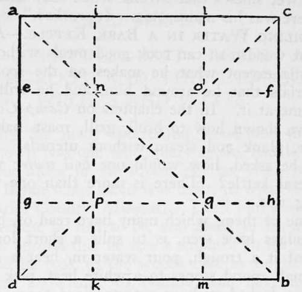
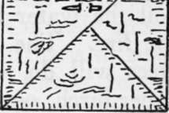

Boiling Water In A Bark Kettle
Description
This section is from the book "Camping And Woodcraft", by Horace Kephart. Also available from Amazon: Camping and Woodcraft.
Boiling Water In A Bark Kettle
A competent woodsman can cook good meals without any utensils except what he makes on the spot from materials that lie around him, and he will waste no time at it. In the chapters on Camp Cookery* I have shown how to broil, grill, roast, bake, barbecue, plank and steam without utensils. But, it may be asked, how would one boil water without a metal kettle? There is more than one way of doing this.
One of them, which many have read of, but few nowadays have seen, is to split a short log, chop out of it a trough, pour water in, heat a number of small round stones to a white heat, pick up one with a forked stick or extemporized tongs, drop it into the water, add another, and so on until the water boils, which will be very soon. To keep it boiling, remove the stones and add others from the fire. You must select such stones as will neither burst in the fire nor, like sandstone, shiver to pieces when dropped in the water.
Another way, which will be news to many, is to boil the water in a bark kettle by direct action of the fire. The thin inner bark of many species of trees will do, or a thin sheet of the bark of the paper birch, notwithstanding that it is so notoriously inflammable that we use it for kindling. No, this is not a trick; it is a practical expedient.
But first you must know how to make a watertight vessel out of nothing but a square sheet of pliable bark and a couple of thorns or splinters. Seems impossible? Nay, very simple. Try it at home with a sheet of writing paper. Cut out a 12-inch square (or smaller—I give dimensions for a real bark kettle in which to boil a quart or more of water). Note the diagram (Fig. 87). Fold over from d to c making the points of triangle meet at a. Open up, and fold similarly from a to b. Open again, and you have the diagonal creases ab and dc. Turn the sheet over, and fold from ad along the line ikj which is to be 3^ inches from the margin. Similarly fold cb, dbj and ac. You now have made all creases as in the figure. They are your guides in making a neat job.
*See Vol. I., pp. 293-299, 301, 309, 312, 315, 317, 319, 322-324 330, 344-346, 352, 369.
Fig. 87. Folds for water tight vessel.
Grasp the point i with one hand and e with the other, raise them, and bring them together: This throws a outward at an angle. Fold a over to right on the outside, and hold it there. Do the same at the corner c. These two corners now will overlap on the outside, as in Fig. 88. Fasten them with a pin (with a splinter like a skewer, if you are using bark;. In the same way fold the corners d and b, and pin them. The creases no, pq, np, oq, now are folded inward, instead of outward as they were originally. Here you have an open-top box 5 inches square and 33^ inches deep, with perfectly tight joints, which will hold water so long as it does not seep through the pores of the paper (would hold it till it evaporated, if vou had used, bark).
Fig. 88. Bark kettle (end).
Now, if you are skeptical about boiling water in a bark kettle, suppose you try your paper one. Arrange a stand that will support it over a gas jet. Put the paper kettle on the stand and pour some water into it. Light the gas, raising the jet just high enough for it to play on the bottom of the vessel but not up the sides; for, mark you, if the flame touches the paper anywhere above the water-line, it will set the thing afire. Observing this precaution, you can boil water in the paper kettle quicker than you could in tin.
The reason that the paper is not even scorched is that the water inside instantly attracts the heat of the flame and absorbs it to itself. My partner, Bob, once told me he could take a boiling tea-kettle from the stove, put his naked hand on the bottom, and hold the thing out at arm's length. I smiled. He led the way to the kitchen, where an old-fashioned black kettle of cast-iron was steaming at a hard boil, did as he had offered, and sustained no injury whatever. Then I did it myself. The bottom of the kettle merely feels warm to the naked hand. But the water must be boiling, not just simmering. If one touches the vessel above the water-line, he will get a severe burn.
In making a bark kettle, the material must, of course, be quite free from holes or cracks. In the case of birch, select a sheet free from "eyes" and surface "curls." Supple it by roasting gently over the fire.
I have boiled water in such a vessel by setting it directly on the coals, and covering all around its bottom with ashes, so no flame could reach the sides. For your first trial it will be better to build a little circular fireplace of stones, with a draught hole at the bottom, and cover the top with flat rocks, leaving an opening of about three inches diameter for the bottom of your kettle. Fill this with live coals, and chink with mud, so that no flame can get out.
It might seem impossible to melt snow in such a bark utensil, but the thing can be done when you know how. Place the kettle in the snow before the fire, so it will not warp from the heat. In front of it set a number of little forked sticks, slanting backward over the kettle, and on each fork place a snowball. Thus let the snowballs melt, into the kettle until the vessel is filled as nearly as you want it. Then set the kettle on the coals, cover around it with ashes to keep flame from the sides, and the water will boil in a few minutes.
Continue to:
- prev: Chapter XV. Bark Utensils. Bast Ropes And Twine. Root And Vine Cordage. Withes And Splits
- Table of Contents
- next: Bark Utensils